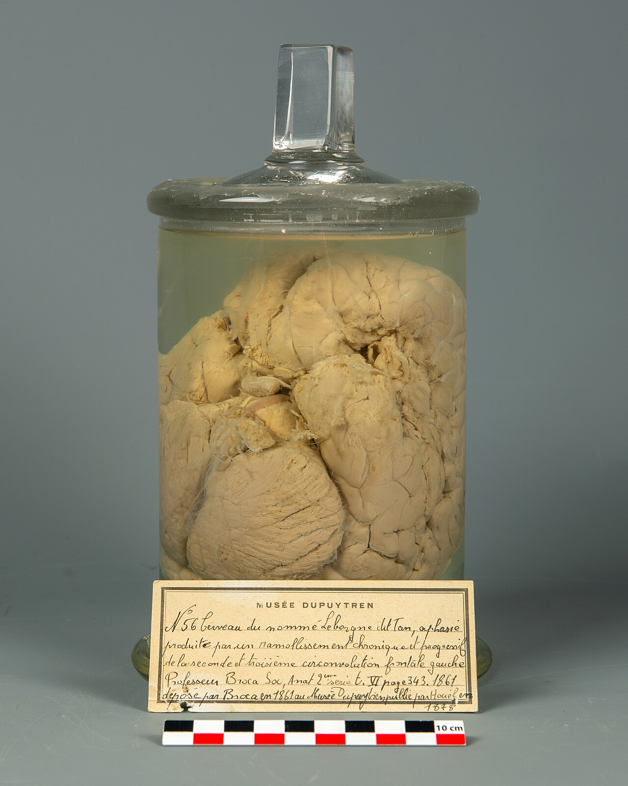
Fig. I · 1861La syllabe de Leborgne
Protocole. Un patient ne dit plus que « tan ». Broca attend l'autopsie et ouvre le frontal gauche.
Résultat. Une lésion localisée, une fonction perdue : la parole articulée a une adresse.

Planches d'expériences, vraies images du cerveau, techniques, cave des mythes, projets ouverts — avec leurs sources
 13 planches d'expériences
13 planches d'expériences 12 techniques
12 techniques Un cabinet, pas un fil d'actualité
Un cabinet, pas un fil d'actualitéToutes les images viennent de Wikimedia Commons (domaine public ou licence libre). Chaque planche renvoie à une fiche du site : on ne collectionne pas pour décorer, on collectionne pour comprendre. Rien ici n'est un diagnostic, ni un protocole à reproduire chez soi.
Planches d'expériencesTreize protocoles dessinés comme des planches de cabinet : ce qu'on a fait, ce qui est apparu, où lire le détail et les critiques.

Fig. I · 1861Protocole. Un patient ne dit plus que « tan ». Broca attend l'autopsie et ouvre le frontal gauche.
Résultat. Une lésion localisée, une fonction perdue : la parole articulée a une adresse.
 Fig. II · 1937-1957
Fig. II · 1937-1957Protocole. Patient éveillé, cortex exposé, faible courant. On note quel doigt, quelle lèvre bouge ou picote.
Résultat. L'homoncule : la carte n'est pas à l'échelle du corps, elle est à l'échelle de la précision.
 Fig. III · 1924-1929
Fig. III · 1924-1929Protocole. Berger pose des électrodes sur le scalp de son fils, puis de patients. Il cherche une « énergie psychique ».
Résultat. Des ondes régulières (alpha) apparaissent, disparaissent à l'ouverture des yeux. L'EEG est né.
 Fig. IV · 1953-1957
Fig. IV · 1953-1957Protocole. On retire les hippocampes pour une épilepsie. Milner fait dessiner une étoile en miroir, jour après jour.
Résultat. H.M. s'améliore sans se souvenir d'avoir pratiqué. La mémoire procédurale ne passe pas par l'hippocampe.
 Fig. V · 1960s
Fig. V · 1960sProtocole. Image à gauche ou à droite seulement, après section du corps calleux. On demande de nommer, ou de désigner.
Résultat. L'hémisphère gauche parle ; le droit agit. Puis le patient invente une raison cohérente.
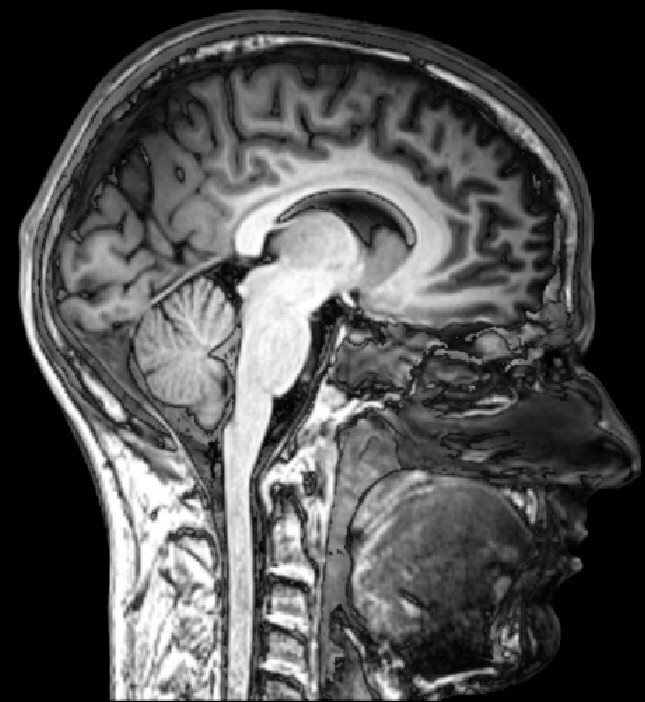
Fig. VI · 1959-1962Protocole. Microélectrode dans le cortex visuel d'un chat. On projette des barres d'orientations différentes.
Résultat. Chaque cellule a une orientation préférée. Le monde visuel est déjà une statistique, pas une photo.
Fig. VII · 1983Protocole. Le participant note l'heure d'une horloge tournante au moment où il « décide » de fléchir le poignet. L'EEG tourne.
Résultat. Le potentiel de préparation précède le moment conscient. Le moi n'est pas le premier informé.
 Fig. VIII · 1974
Fig. VIII · 1974Protocole. Un patient avec lésion occipitale dit ne rien voir dans une partie du champ. On lui demande de deviner, ou de pointer.
Résultat. Il pointe mieux que le hasard. Une voie visuelle a survécu à la conscience.
 Fig. IX · 1994
Fig. IX · 1994Protocole. Quatre paquets de cartes, gains et pertes cachés. On mesure aussi la conductance de la peau.
Résultat. Les sujets sains évitent les paquets toxiques avant de pouvoir l'expliquer. Les lésions frontales, non.
Fig. X · 1998Protocole. Une main en caoutchouc est caressée en même temps que la main cachée. On demande ensuite où est « ma » main.
Résultat. Le cerveau adopte le leurre. Le schéma corporel est une hypothèse, pas une donnée.
 Fig. XI · 1870
Fig. XI · 1870Protocole. Faible courant sur le cortex d'un chien anesthésié. On observe le mouvement controlatéral.
Résultat. Le cortex moteur existe. La stimulation électrique devient un instrument, pas une curiosité.
 Fig. XII · 1960s-2000
Fig. XII · 1960s-2000Protocole. On touche le siphon d'une aplysie, on mesure le réflexe de retrait, on répète, on associe un choc.
Résultat. L'apprentissage change le nombre et la force des synapses. Nobel 2000. La mémoire a une biologie.
 Fig. XIII · 1954
Fig. XIII · 1954Protocole. Sherif sépare vingt-deux garçons, les met en compétition, puis casse la conduite d'eau du camp.
Résultat. Le trophée fabrique l'ennemi. Seul un but qui exige les deux groupes désarme le « eux ».
49 fichiers libres : portraits, coupes, colorations, IRM, illusions, tests. Clique la source Commons pour le fichier original.

Gall promettait de lire le caractère dans les bosses. Faux de bout en bout — et pourtant l'idée qu'une fonction a une place a survécu.

En 1861, l'autopsie de Leborgne relie une lésion frontale gauche à la perte de la parole articulée.

L'aphasie fluide et vide de sens : l'autre pôle du réseau du langage.

La barre à mine, le lobe frontal, et une personnalité trop souvent romancée ensuite.
Le corps selon le cortex : mains et lèvres démesurées, tronc minuscule.
52 territoires selon les couches cellulaires — un siècle avant l'IRM, des frontières encore utiles.
Sans lui, plus de souvenirs déclaratifs nouveaux : la leçon de H.M.
Deux cents millions de fibres. Les sectionner a révélé le split-brain — et nourri un mythe.
Frontal, pariétal, temporal, occipital : une carte utile, jamais une prison.

Dendrites, axone, synapse : l'unité que Cajal a imposée contre Golgi.
Là où le courant devient molécule — et où agissent presque tous les psychotropes.
Amygdale, hippocampe, hypothalamus. Le « cerveau émotionnel séparé » est un mythe : ces structures décident aussi.
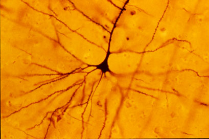
La méthode qui a rendu visibles les arbres neuronaux — et permis les planches de Cajal.
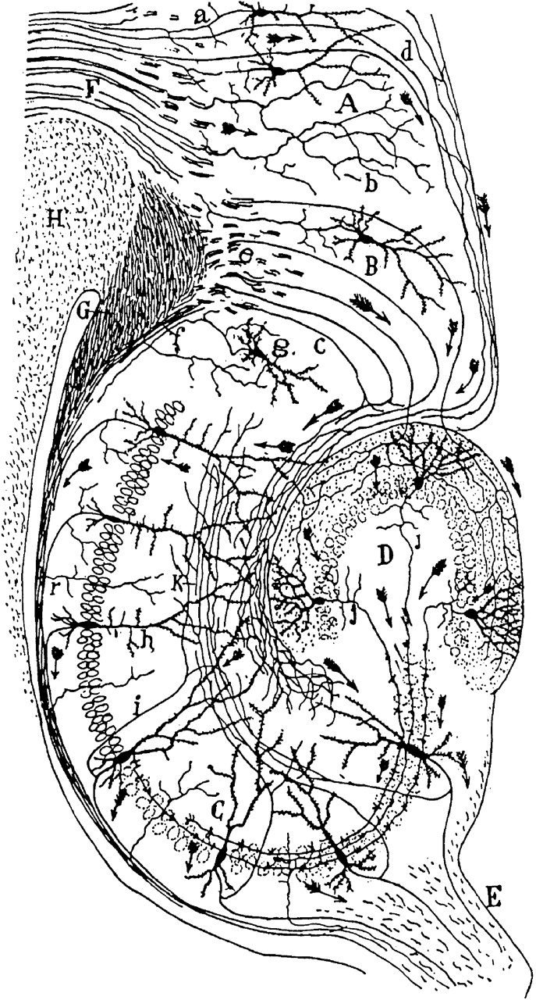
Une planche d'observation plus précise que beaucoup de schémas modernes.
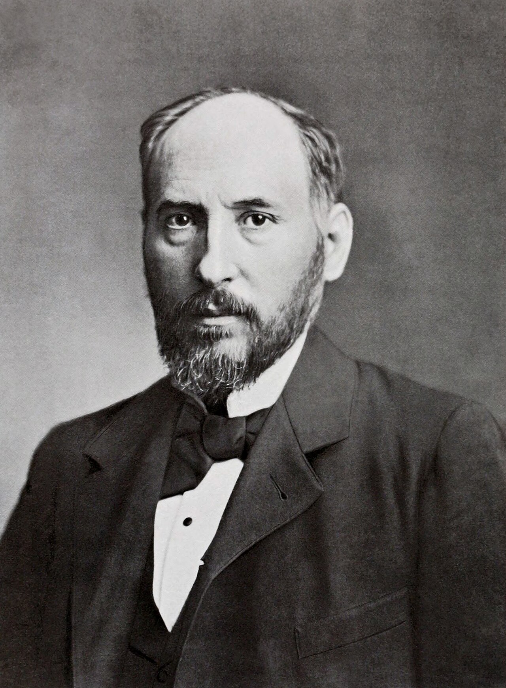
Nobel 1906. La doctrine du neurone, et des milliers de dessins encore enseignés.
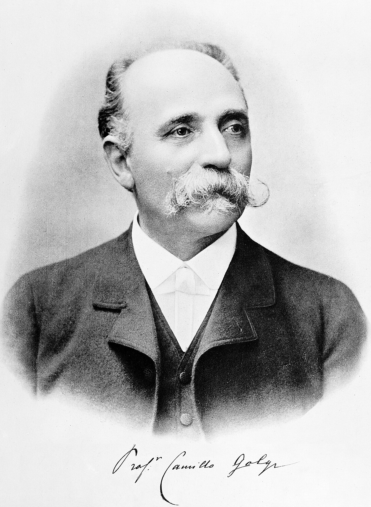
Inventeur de la coloration au chrome-argent. Il voyait un réseau continu : l'erreur féconde.
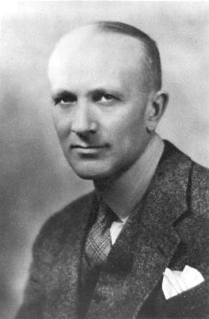
Montréal, patient éveillé, stimulation corticale : la carte du corps et parfois un souvenir.
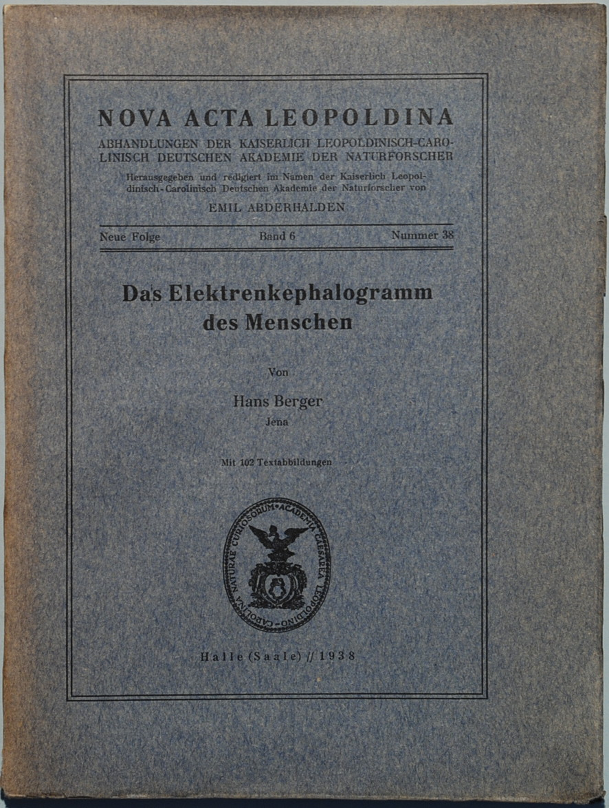
Premier EEG humain. D'abord moqué, puis devenu l'outil quotidien du sommeil et de l'épilepsie.
Où poser les électrodes pour que les laboratoires se parlent. Technique, pas esthétique.
Une coupe réelle, pas un schéma. Corps calleux, cervelet, tronc : tout y est visible.
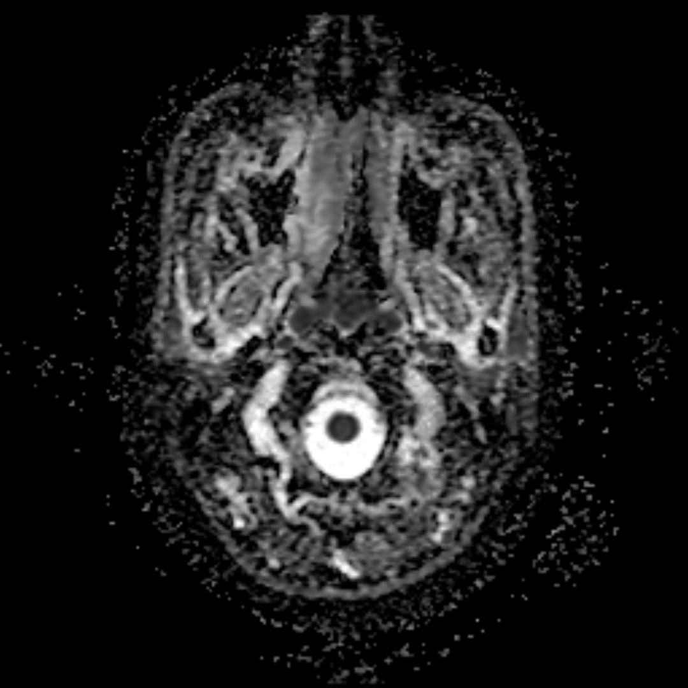
Le regard du radiologue : substance grise, substance blanche, ventricules.

Les faisceaux de substance blanche reconstruits par la diffusion de l'eau. Base du connectome.

Une bobine, un champ, une région perturbée quelques millisecondes. De la causalité, enfin.
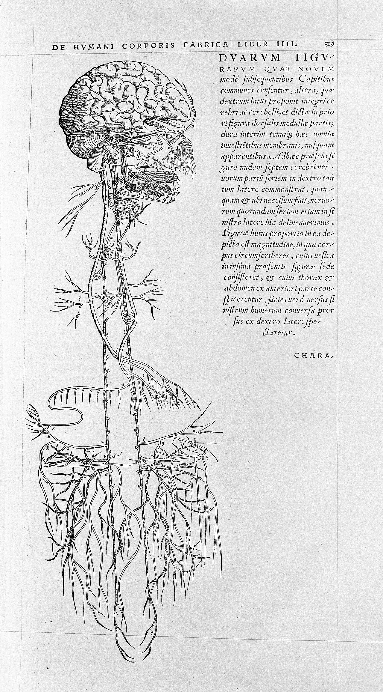
Ouvrir un crâne et le dessiner sans les dogmes de Galien. La première planche moderne.
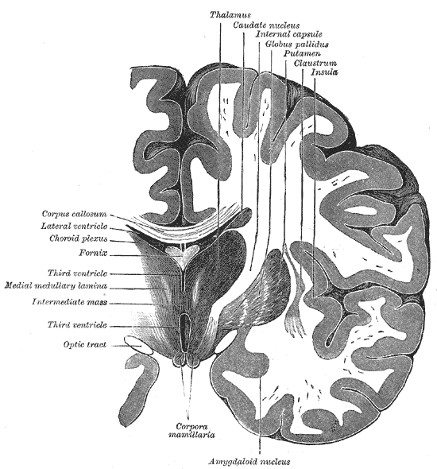
Planche pédagogique du Gray's Anatomy : nerfs crâniens, tronc, cervelet.
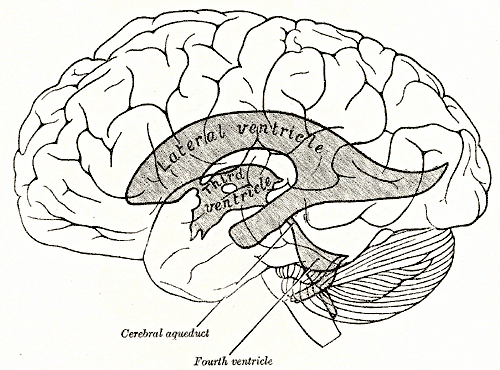
Les cavités du liquide cérébrospinal. Longtemps explorées par des techniques aujourd'hui abandonnées.
La pièce à conviction de Broca. Une lésion, une syllabe, une science.

La Salpêtrière : observer pour localiser. Source directe de la neurologie clinique.

1879, Leipzig : le premier laboratoire. Mesurer le temps de l'esprit.

La sensation comme logarithme du stimulus. La psychologie quantitative commence ici.

La vitesse de l'influx n'est pas infinie. Le temps de réaction devient une donnée.

La fistule, le métronome, la salive : un réflexe mesuré devient une théorie de l'apprentissage.

Stimulus neutre, stimulus inconditionnel, réponse. La planche la plus copiée de la psychologie.

Ce que l'on perd en vingt-quatre heures, et pourquoi l'espacement bat le bachotage.

Le schéma de cours, à relier aux planches de Cajal : deux langages, un même objet.

Une silhouette pour se repérer avant d'ouvrir les vraies IRM.

L'expression des émotions : photographies, questionnaires, continuité avec l'animal.

Un test projectif célèbre, aujourd'hui très critiqué pour sa validité. À voir comme objet historique.

Le levier, la boulette, le programme de renforcement. Et plus tard, le défilement infini.

Savoir que les segments sont égaux ne les fait pas voir égaux. La perception n'écoute pas le cours.

Un triangle qui n'existe pas : le cerveau complète. C'est déjà une théorie de la prédiction.

On ne peut pas voir les deux à la fois. Figure et fond : une décision, pas une copie.

Deux interprétations pour le même encre. La conscience bascule, le dessin ne bouge pas.

La conscience comme courant. Lire le Précis après avoir vu les planches change le texte.

Délier les aliénés : un geste politique autant que médical, aux racines de la clinique.
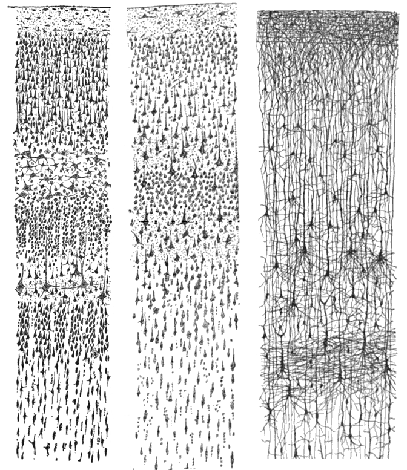
Couches, pyramides, arbustes : la planche d'un observateur qui a gagné contre le réseau continu.
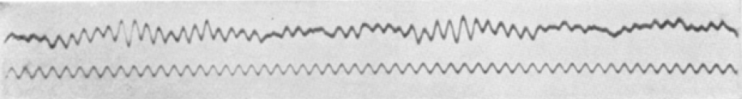
Des ondes, enfin visibles. Berger a ouvert une fenêtre temporelle que l'IRM n'égalera jamais.

Deux pôles, un réseau. À relier aux aphasies et à la fiche Langage.
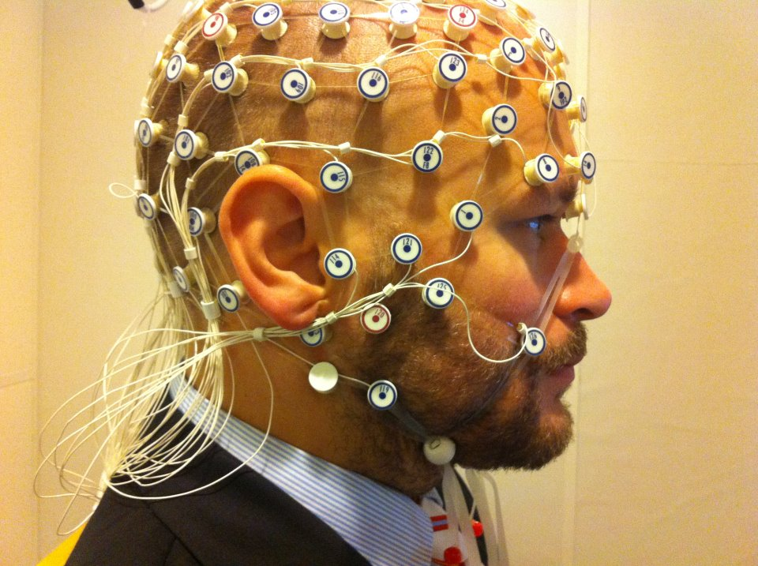
Le scalp, les électrodes, le tracé. Technique quotidienne, pas lecture de pensées.
Techniques : ce que chacune voitÉlectricité du scalp
Résolution temporelle excellente, spatiale faible. Sommeil, épilepsie, P300, N400, MMN.
Champs magnétiques
Meilleure localisation que l'EEG. Rare, coûteux, complémentaire.
Traceur radioactif
Métabolisme et récepteurs (dopamine, amyloïde). Plus moléculaire que l'IRMf.
Signal BOLD
Corrélation hémodynamique, délai de 4-6 s. Ne photographie pas une pensée.
Diffusion de l'eau
Faisceaux de substance blanche. Cartographie du connectome structurel.
Impulsion magnétique
Perturbe ou facilite une région. Valeur causale, usage clinique encadré.
Courant faible
Facilitation diffuse, effets modestes. Beaucoup de marketing, peu de miracles.
Électrodes implantées
Parkinson, quelques indications. Travaux fondateurs de Benabid à Grenoble.
Microélectrode
Hubel & Wiesel, cellules de lieu, cellules de grille. La résolution ultime, sur l'animal surtout.
Lumière + opsines
Allumer une population précise chez l'animal. Pas un casque de salon.
Anesthésie d'un hémisphère
Savoir où habite le langage avant une chirurgie. Un test brutal et précieux.
Dissociation
Quand A survit et B disparaît, A et B ne sont pas le même système. Gage, H.M., Tan.
Des sites et des jeux de données entiers, pas des extraits. On peut y entrer sans payer un article : atlas, IRM brutes, cartes statistiques, logiciels.
Carte structurelle et fonctionnelle de cerveaux sains (≈ 1 200 jeunes adultes, puis lifespan). IRM 3T/7T, MEG, comportement. Logiciel libre Connectome Workbench.
Van Essen, Ugurbil — NIH Blueprint
Entrepôt public de jeux de données IRM, EEG, MEG, PET, au format BIDS. On peut ouvrir, télécharger, réanalyser.
Poldrack et al.
Atlas d'expression génique, types cellulaires, cerveau humain et souris. Données et visualiseurs ouverts.
Allen Institute for Brain Science
Un cerveau post-mortem coupé à 20 µm, un téraoctet, cartes cytoarchitectoniques. Licence ouverte. Viewer siibra.
Amunts, Evans — Science 2013
Atlas probabiliste 3D des aires corticales, plus de territoires que Brodmann, branché sur EBRAINS.
Amunts 2020, Science
Cartes statistiques non seuillées d'IRM et de TEP, visualisables, citables, réutilisables pour méta-analyses.
Gorgolewski et al.
Méta-analyse automatique de milliers d'articles d'IRMf. Taper « amygdala » ou « working memory » et voir le consensus.
Yarkoni et al.
Infrastructure européenne héritée du Human Brain Project : atlas, modèles, données, outils d'analyse.
Human Brain Project → EBRAINS
Visualisations et données du HCP déjà prétraitées. Pour explorer sans reconstruire toute la chaîne.
Washington University
Programme américain de technologies pour observer et perturber les circuits. Appels, outils, données associées.
NIH
Catalogue d'outils libres : FSL, FreeSurfer, SPM communautaires, pipelines de prétraitement.
NITRC
Ontologie des fonctions cognitives, reliée aux tâches et aux cartes. Pour ne plus mélanger les mots.
Poldrack / Bilder
 La cave : caché, exagéré, abandonné
La cave : caché, exagéré, abandonnéCe que les manuels grand public lissent : doctrines mortes, techniques brutales, récits trop beaux.
On vendait des bustes, des cabinets, des expertises judiciaires. Il n'y avait aucune corrélation fiable entre une bosse et un trait. Ce qui reste : l'idée de localisation, reprise ensuite par Broca avec une méthode inverse — partir du déficit, pas du crâne.
Lire autourAucune mesure de métabolisme, aucune lésion, aucune IRMf ne soutient ce chiffre. Un AVC de quelques millimètres suffit à tout changer. Le mythe vend des livres et des films ; il n'explique rien.
Lire autourSperry a montré des spécialisations. Les magazines ont conclu à deux personnalités. En cerveau intact, les hémisphères coopèrent en permanence via le corps calleux.
Lire autourDes dizaines de milliers de personnes opérées au XXe siècle, souvent sans consentement éclairé. Présentée comme une modernité. C'est une page à connaître, pas un modèle à réhabiliter.
Lire autourLes récits tardifs ont noirci Gage. Il a travaillé ensuite, s'est en partie réadapté. La leçon sur le frontal reste ; le roman, non.
Lire autourAprès des lésions corticales chez le rat, Lashley conclut à l'équiponentialité. Trop extrême. Vrai : une fonction complexe n'est pas un point. Faux : tout est interchangeable.
Lire autourOn remplaçait le liquide cérébrospinal par de l'air pour voir les ventricules à la radio. Douloureux, dangereux, abandonné dès l'arrivée du scanner. Une technique réelle, aujourd'hui cachée des manuels grand public.
Lire autourSe dire « visuel » ou « auditif » ne prédit pas la meilleure méthode. Le double codage aide tout le monde. Le test préalable et l'espacement aussi.
Lire autour Sources et portes de sortie
Sources et portes de sortie